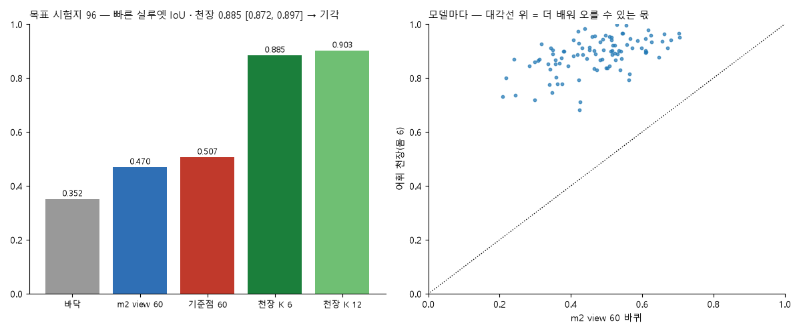

실험 m2_tr0290_h042_어휘천장
목표 G1.2 view 모음 → 파츠별 CAD code(CadQuery · 그 전 「3 면도 → 파츠별 CAD」 · 지금 M2 는 위 · 앞 · 옆 고정 세 장만 받음 → 아무 각도 N 장으로 바꿀 것 · 11-20) · G1 첫 제품 — 피규어 · 메카 사진 여러 장 + 치수 → 숨은선 3 면도 + 파츠별 CAD · G0 임의의 이미지 → CAD 코드 · 빌린 가정 4: 정사영 · 시점앎 · 흰바탕 · 렌더화풍 · 갚는 계획: 진단 · 목표 시험지 96(292 중 썸네일 12 + 무작위) · 거친 실루엣 천장 — 다음 디테일 · 실물 · 목표 시험지 값: 안 잼 (!)
m2 어휘(몸 7 종류 · 축 셋 · 몸 6)를 실제 물체의 정답 3면도 실루엣에 가장 잘 맞추면, 실루엣 IoU 천장이 어디까지 가나?
판정 · m2-H42 기각(천장 0.885 [0.872, 0.898] · 기각선 0.80) — m2 어휘로도 실제 물체의 거친 실루엣을 0.89 까지 그릴 수 있음 · 지금 m2 0.47 · 더 배워 오를 몫 0.41 · 몸 12 는 +0.02 · 거친 실루엣에서는 어휘가 막지 않음 → 막힘은 m2 학습 · 일반화 · 다음 m2-H43(실제 데이터로 배우기)
| 가설 | 주장 | 결과 | 근거 |
|---|---|---|---|
| m2-H42 | m2 어휘(7 종류 · 몸 6)로는 실제 물체의 거친 실루엣도 잘 못 그린다 — 어휘가 목표판을 막는다 | 기각 | 같은 96 바닥 0.352 · m2 view 60 0.470 · 기준점 60 0.507 · 천장 몸 6 0.885(가운데 0.898) · 몸 12 0.903(− 몸 6 +0.018 [0.014, 0.022]) · 천장 − m2 view 60 +0.415 [0.396, 0.434] · 출발별 평균 m2 0.851 · 무작위 0.862 · 0.860 · 0.860 · 가장 높은 출발이 m2 인 몫 0.24 · 자 검사(생성기 32 · 어휘 정확) 천장 0.955 |
분석
한 줄로
물음: m2 어휘(몸 7 종류 · 축 셋 · 몸 6)를 실제 물체의 정답 3면도 실루엣에 가장 잘 맞추면, 실루엣 IoU 천장이 어디까지 가나?
답: 0.885 까지 간다 — 「어휘가 막는다」 는 기각. 지금 m2 는 0.47 이라 더 배워서 오를 몫이 0.41 이나 남았다. 몸을 12 개로 늘려도 +0.02 뿐이다. 다만 거친 실루엣에서만 잰 것이다.
왜 이 실험을 했나
tr289 에서 바탕 m2 는 덜 배운 시제품이었다(20 → 60 바퀴 0.394 → 0.453). 그런데 더 배워서 어디까지 오를 수 있는지 몰랐다. 피규어 · 메카를 7 종류 도형 6 개로는 애초에 못 그린다면 더 배워도 소용이 없다. 그래서 그 어휘의 천장부터 쟀다.
바꾼 것 하나
칸을 내는 쪽만 바꿨다. 망 대신, 정답 3면도 실루엣에 칸을 직접 맞췄다. 먼저 있음 · 종류 · 축을 부드럽게 풀어 맞추고(온도를 점점 낮춤), 마지막에 하나로 정해 치수 · 자리만 다시 맞췄다. 출발은 m2 출력 하나와 무작위 셋이고, 모델마다 가장 높은 것을 썼다. 자는 tr289 와 같은 빠른 실루엣 IoU 다. 돌리기 전에 어휘가 정확히 맞는 생성기 부품 32 개로 이 맞추기를 검사했다 — 천장 0.955 로 맞추기는 제대로 한다. 카드는 숫자를 보기 전에 커밋했다(72c0fb66).
결과

| 목표 시험지 96 · 빠른 실루엣 IoU | 값 |
|---|---|
| 바닥(남의 정답) | 0.352 |
| m2 view 60 바퀴(지금) | 0.470 |
| 기준점 60 바퀴 | 0.507 |
| 어휘 천장(몸 6) | 0.885 [0.872, 0.898] — 판정선 0.80 위 · 기각 |
| 어휘 천장(몸 12 · 같이) | 0.903(몸 6 보다 +0.018) |
왜 이렇게 나왔나
확인한 것
- 축에 맞춘 단순 도형 6 개의 합집합으로도 실제 물체의 위 · 앞 · 옆 실루엣을 0.89 까지 덮는다.
- 모든 모델이 m2 보다 천장이 높다(흩뿌림이 모두 대각선 위). 더 배워 오를 몫은 평균 0.41 이다.
- 몸 수를 두 배로 늘려도 0.02 만 오른다. 개수는 막힘이 아니다.
- m2 출력에서 출발한 맞춤이 가장 높은 경우는 24 % 뿐이다. m2 가 내는 칸 배치는 좋은 출발점도 못 된다.
짐작 (아직 확인 안 함)
- 막힘은 어휘가 아니라 m2 의 학습 · 일반화다. 생성기 부품만 본 m2 가 실제 물체를 처음 본다.
한계
- 실루엣 IoU 는 거친 바깥 모양만 본다. 얼굴 · 손가락 같은 디테일, 몸을 제대로 나눴는지, 3D 모양이 맞는지는 안 본다. 세 장 실루엣만 맞으면 엉뚱한 몸 조합도 높게 나올 수 있다.
- 특징(구멍 · 홈)과 필렛은 안 썼다. 96 부분집합이다.
- 시험 292 에서 뽑은 96 이다(연습 · 시험 나누기는 이 뒤에 정함).
배운 것과 다음
거친 실루엣에서는 m2 어휘가 막지 않는다 — 지금 m2 는 그 천장의 절반에 머문다.
- 실제 데이터로 m2 를 배운다(m2-H43) — 원화CAD짝 학습 5,499 를 다시 그려 맞추기 손실로.
- 그 전에 연습(검증 300) · 시험(292) 나누기와 관문을 하네스에 넣는다.
- 디테일 쪽 어휘 천장은 실루엣이 따라잡은 뒤에 고운 자로 다시 잰다.
실험 기록
- 카드(결과 전 커밋 72c0fb66 · m2-H42_A_Ce · 입력꼴 칸) · 어휘290.py(자검사 · 흐름 · 맞추기 · 재기 · 그림) · 잼.json · 흐름.png · 결과.png · 원본 out/설명/캐드부품/모델290(자검사.json · 맞춤_K6 · K12 · 셈.npz)
- 맞추기 두 GPU · 몸 6 은 반쪽마다 약 42 분 · 몸 12 는 약 41 분.